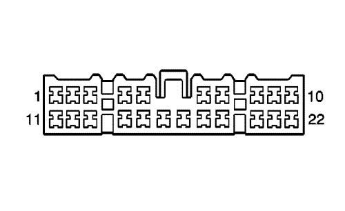
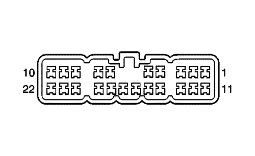

Spark |
||||||||
|
|
|
|||||||
|
 |
 |
Información de parte de conector
| Información de parte de conector
|
Información de parte de terminal
| Información de parte de terminal
|
Bulón | Cable | Circuito | Función | Bulón | Cable | Circuito | Función |
|---|---|---|---|---|---|---|---|
1 | 0,5 D-GN/WH | 6549 | Señal de activación del interruptor LPG (LCP) | 1 | 0,5 D-GN/WH | 6549 | Señal de activación del interruptor LPG (LCP) |
2 | 0.5 WH | 2501 | Bus de datos serie GMLAN de alta velocidad | 2 | 0.5 WH | 2501 | Bus de datos serie GMLAN de alta velocidad |
0.5 WH | 2501 | Bus de datos serie GMLAN de alta velocidad | |||||
3 | 0,35 D-BU | 2769 | Señal del indicador del freno | 3 | 0.5 L-BU | 2769 | Señal del indicador del freno |
4 | 0,5 BN/YE | 20 | Señal del interruptor de la luz de freno | 4 | 0,5 BN/YE | 20 | Señal del interruptor de la luz de freno (JM4 ó FX3) |
5 | 0,5 BK/D-BU | 61 | Referencia baja (C68) | 5 | 0,5 BK/D-BU | 61 | Referencia baja (C68) |
0,35 BK/D-BU | 61 | Referencia baja | |||||
6 | 1 GY/VT | 267 | Tensión de alimentación de la bobina del relé del desempañador trasero (volante a la derecha) | 6 | 1 GY/VT | 267 | Tensión de alimentación de la bobina del relé del desempañador trasero (volante a la derecha) |
7 | 1 VT/BN | 741 | Tensión de encendido 3 (volante a la derecha) | 7 | 1 VT/BN | 741 | Tensión de encendido 3 (volante a la derecha) |
8 | 1 YE/BN | 95 | Señal del interruptor del limpiaparabrisas (volante a la derecha sin U05) | 8 | 1 YE/BN | 95 | Señal del interruptor del limpiaparabrisas (volante a la derecha sin U05) |
9 | 1 WH | 92 | Velocidad alta del motor del limpiaparabrisas (volante a la derecha sin U05) | 9 | 1 WH | 92 | Velocidad alta del motor del limpiaparabrisas (volante a la derecha sin U05) |
10 | 1 BN | 96 | Señal de retardo del pulso del interruptor del limpiaparabrisas (volante a la derecha) | 10 | 1 BN | 96 | Señal de retardo del pulso del interruptor del limpiaparabrisas (volante a la derecha) |
11 | 0.5 YE | 1410 | Control del indicador de fallo del ABS del remolque (FX3) | 11 | 0.5 YE | 1410 | Control del indicador de fallo del ABS del remolque (FX3) |
12 | 0.5 L-BU | 2500 | Bus+ de datos serie GMLAN de alta velocidad | 12 | 0,5 D-BU | 2500 | Bus+ de datos serie GMLAN de alta velocidad |
0,5 D-BU | 2500 | Bus+ de datos serie GMLAN de alta velocidad | |||||
13 | 0.5 WH | 2501 | Bus- de datos serie GMLAN de alta velocidad (sin FX3) | 13 | 0.5 WH | 2501 | Bus- de datos serie GMLAN de alta velocidad (sin FX3) |
0,5 OG/GY | 753 | Señal alta del módulo del volante (FX3) | 0,5 OG/GY | 753 | Señal alta del módulo del volante (FX3) | ||
14 | 0.5 L-BU | 2500 | Bus+ de datos serie GMLAN de alta velocidad (sin FX3) | 14 | 0.5 L-BU | 2500 | Bus+ de datos serie GMLAN de alta velocidad (sin FX3) |
0,5 BN/OG | 752 | Señal baja del módulo del volante (FX3) | 0,5 BN/OG | 752 | Señal baja del módulo del volante (FX3) | ||
15 | 0,5 D-BU/BK | 6727 | Control del indicador de control de estabilidad (FX3) | 15 | 0,5 D-BU/BK | 6727 | Control del indicador de control de estabilidad (FX3) |
16 | 0,5 D-BU/YE | 6844 | Señal del interruptor de control de estabilidad (FX3) | 16 | 0,5 D-BU/YE | 6844 | Señal del interruptor de control de estabilidad (FX3) |
17 | 0,5 BN/YE | 762 | Señal requerida del A/A | 17 | 0,5 BN/YE | 762 | Señal requerida del A/A |
18 | 0,5 D-GN/BN | 2087 | Referencia de 5 V (FX3) | 18 | 0,5 D-GN/BN | 2087 | Referencia de 5 V (FX3) |
0,5 D-GN/BN | 2087 | Referencia de 5 V (FX3) | |||||
19 | 0,5 YE/WH | 33 | Control del indicador de aviso de frenado (volante a la derecha) | 19 | 0,5 YE/WH | 33 | Control del indicador de aviso de frenado (volante a la derecha) |
20 | 0,5 D-GN/BK | 735 | Señal del sensor de temperatura del aire ambiente (C68) | 20 | 0,5 D-GN/BK | 735 | Señal del sensor de temperatura del aire ambiente (C68) |
0,5 D-GN/BK | 735 | Señal del sensor de temperatura del aire ambiente (C68) | |||||
21 | 0,5 RD/VT | 1640 | Voltaje positivo de batería | 21 | 0,5 RD/VT | 1640 | Voltaje positivo de batería |
22 | 0,5 BN/D-GN | 109 | Señal de interruptor de capó abierto | 22 | 0,5 BN/D-GN | 109 | Señal de interruptor de capó abierto |
| © Copyright Chevrolet. Reservados todos los derechos |